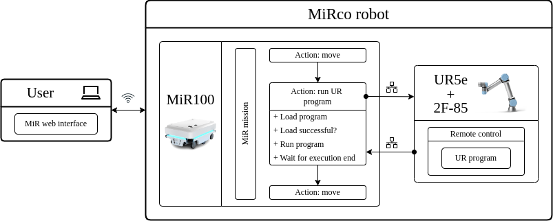
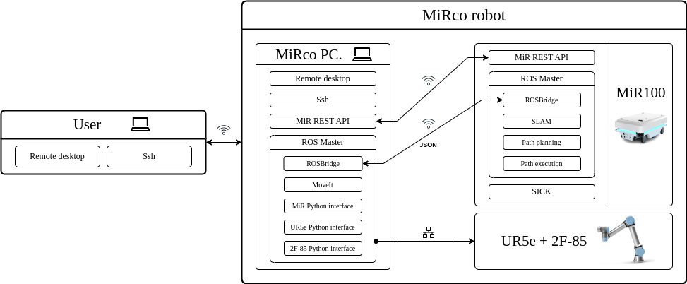

MiRco system interface
There are two ways of controlling MiRco:
- MiRco industrial interface: uses pre-existing option within the robots interfaces for communication between a MiR and a UR robot.
- MiRco ROS interface: uses a separate computer running ROS to control
MiRco.
MiRco industrial interface
MiR and UR already include the ability to connect robots for basic synchronous operation using a MiR action. MiR action only takes care of the synchronization of the task handover. The individual robot tasks - MiR missions and UR programs - have to be predefined in their interfaces, then the task execution is handled by their respective control systems. The UR5e manipulator has to be in remote control mode. Detailed instructions can be found here. A schematic representation of a simple example is shown below.

The user launches the mobile manipulation application through the MiR100 web interface. The task of synchronizing the robots is performed by the MiR100 platform, where the communication between robots is done over an Ethernet connection. Within the MiR100 mission, at the point where the manipulation is to be performed, an action is added to start the UR5e program. MiR100 loads the program, runs it and waits for the end of the execution. The UR program contains manipulation and gripper instructions. MiR100 then proceeds with the execution of the mission.
Note
By installing a plugin for the Polyscope software package - a URCap, the functionality of the UR teach pendant can be extended. The plugin allows starting and stopping MiR100 missions, reading and writing MiR100 registers and accessing MiR100 states such as battery status, robot status and mission status. This documentation does not cover the use of this URCap.
MiRco ROS interface
When the robot is controlled over the ROS interface, the MiRco computer takes over the role of the central control system. The schematic of the system is shown below. MiRco computer is connected to the internal MiR100 computer over WiFi and to the UR5e controller over Ethernet, through which the connections to the manipulator and gripper are established. The computer runs a ROS instance with a unified robot model and ROS drivers for the mobile platform, manipulator and gripper.

With this setup, communication with MiR100 takes place on two levels. The first level is the REST API. The API provides access to most of the functions of the web user interface, such as accessing predefined missions, triggering the docking action, saving robot poses and retrieving the robot state. The second level is direct communication with the ROS instance running on MiR100. Both ROS instances, on MiRco and on MiR100, act as master, so communication between them is done using the ROSBridge package. MiR100 is running a customized version of the ROS navigation stack, through which the platform can be controlled. By using the REST API and direct communication with ROS, we achieve the use of the full capabilities of the mobile platform.
Note
In this setup, the ROS navigation stack used is the MiR100 navigation stack. Target goals are sent to the MiR100 move_base node, and the robot navigation stack handles planning and execution. However, you could implement your own navigation stack on the MiRco side and publish commands to the cmv_vel topic of the MiR100 robot.
Communication with UR5e and the Robotiq 2F-85 gripper is done over an Ethernet connection. MiRco computer is connected to the UR5e controller, over which the communication with the gripper is established. UR5e manipulation is planned and executed using the MoveIt package.